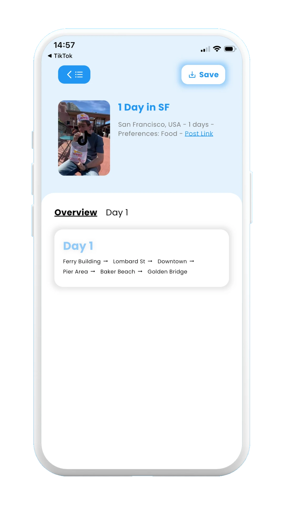
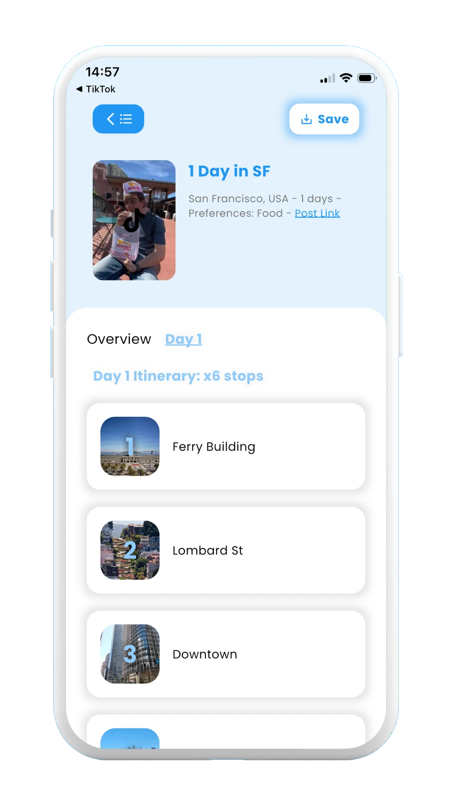
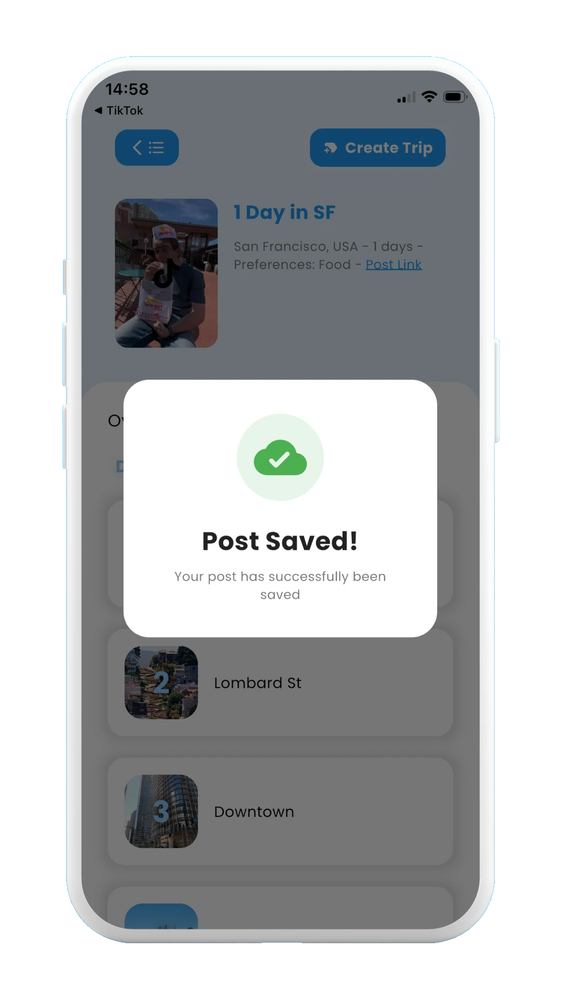
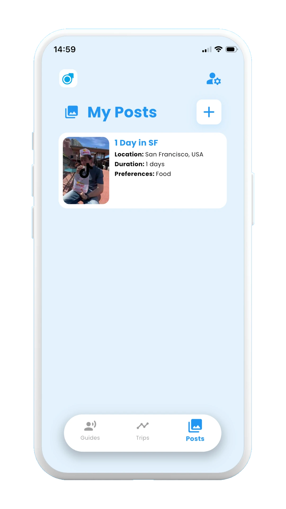
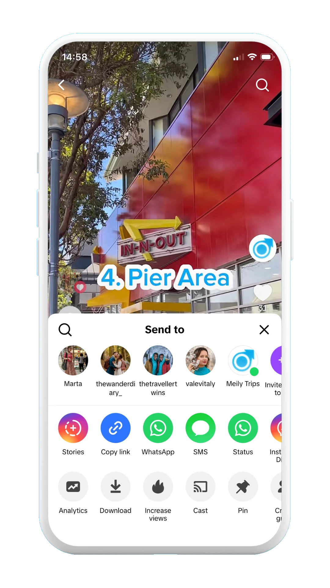
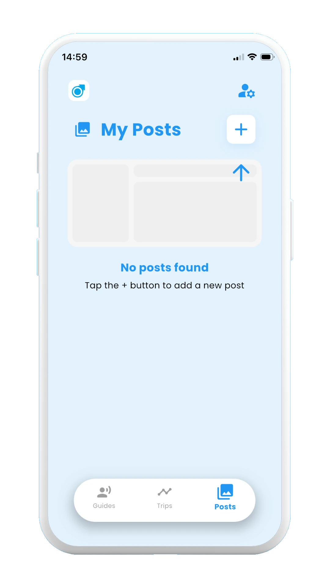
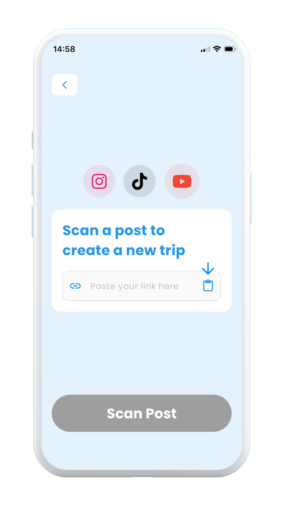
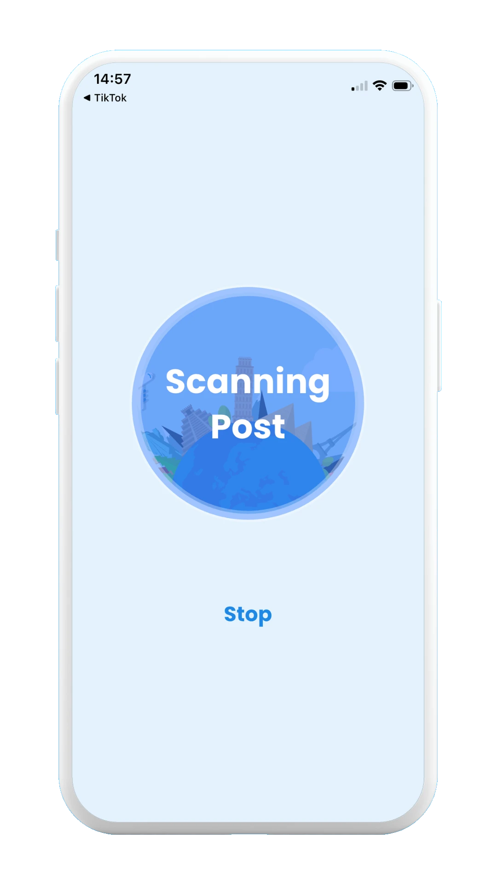

2.1 How to scan posts
On this page you will find a step by step guide showing how to scan a post from social media (TikTok, Instagram, or Youtube) with the different options that Meily Trips offers:
- ✓ Sharing post with Meily Trips, directly from TikTok, Instagram, or YouTube
- ✓ Copy-pasting the link of the post into Meily
As an example, a TikTok video about San Francisco will be scanned, showing all the steps in the process. For easier understanding, screenshots of the app will be included for all the steps. Ready? Let's go!
2.1.1 Sharing the post with Meily Trips
When you find a video that you want to scan from TikTok, Instagram, or YouTube, just share the link with Meily Trips app, and the post will be scanned.
Once the post is scanned, the days and stops mentioned in the video will be displayed on the app, as shown in the images below. Once you review the stops, you can save the post to later include it in your trip itineraries.
The images below show all the steps for sharing the post with Meily, scanning the post, and saving it:

Share with Meily app

Scanning post

Scanned post overview

Scanned post stops

Saved post

Scanned post
2.1.2 Copy-pasting the link from the post
As an alternative, you can copy the link from the post from TikTok, Instagram, or YouTube, and then paste it into Meily Trips for scanning the post. Remeber to save the post once you have scanned it to later use it for your trip itineraries.
The images below show all the steps for copy-pasting the link from the post, scanning it, and saving it:

Copy the link of the post

Select + for a new post

Paste post link

Scanned post stops
Scanned post overview
Scanned post stops
Saved post
Scanned post
The next section, 2.2. How to create trips from scanned posts explains how to use your scanned posts for creating new trip itineraries, as well as well as including your scanned posts into your existing trip itineraries.
Continue with 2.2. How to create trips from scanned posts →